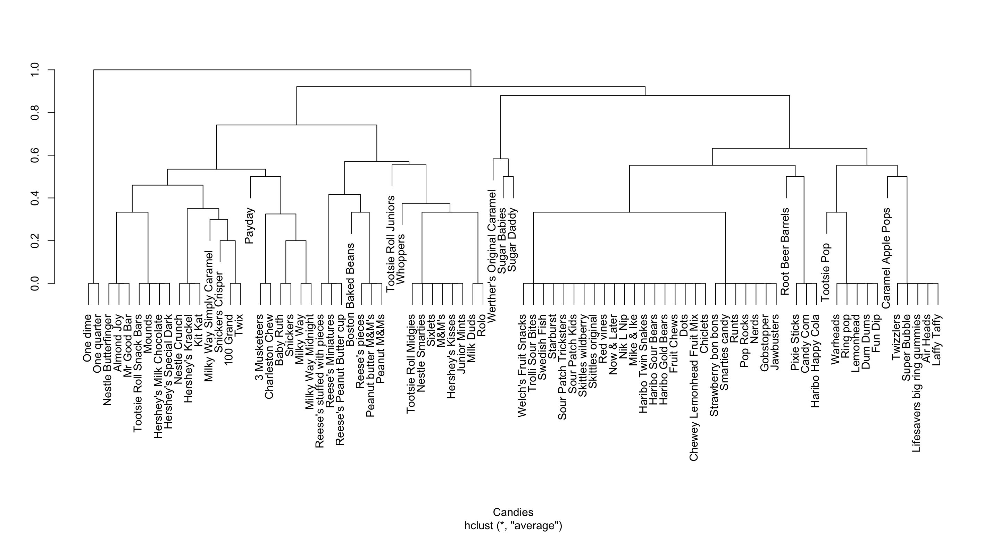

Topic 1 Motivation and Review
1.1 Activity: motivating main ideas
In each of the following situations, there is some behind-the-scenes code that performs an analysis and generates some output plots. Brainstorm what research question(s) are trying to be answered in each of the situations by looking at the first few rows of data and the plots.
Situation A
We have 10,000 observations on the following variables:
ID: IdentificationIncome: Income in $10,000’sLimit: Credit limitRating: Credit ratingCards: Number of credit cardsAge: Age in yearsEducation: Number of years of educationGender: A factor with levelsMaleandFemaleStudent: A factor with levelsNoandYesindicating whether the individual was a studentMarried: A factor with levelsNoandYesindicating whether the individual was marriedEthnicity: A factor with levelsAfrican American,Asian, andCaucasianindicating the individual’s ethnicityBalance: Average credit card balance in $.
## Look at the first few rows
head(Credit)## ID Income Limit Rating Cards Age Education Gender Student Married
## 1 1 14.891 3606 283 2 34 11 Male No Yes
## 2 2 106.025 6645 483 3 82 15 Female Yes Yes
## 3 3 104.593 7075 514 4 71 11 Male No No
## 4 4 148.924 9504 681 3 36 11 Female No No
## 5 5 55.882 4897 357 2 68 16 Male No Yes
## 6 6 80.180 8047 569 4 77 10 Male No No
## Ethnicity Balance
## 1 Caucasian 333
## 2 Asian 903
## 3 Asian 580
## 4 Asian 964
## 5 Caucasian 331
## 6 Caucasian 1151
Situation B
We have 400 observations of the following variables:
admit: binary variable; 0 = rejected, 1 = admittedgre: applicant’s GRE scoreGPA: applicant’s undergraduate GPArank: A “prestige” ranking of the applicant’s undergraduate institution. 1 to 4 going from least to most prestigious
head(grad)## admit gre gpa rank
## 1 No 380 3.61 3
## 2 Yes 660 3.67 3
## 3 Yes 800 4.00 1
## 4 Yes 640 3.19 4
## 5 No 520 2.93 4
## 6 Yes 760 3.00 2

Situation C
We have 85 different Halloween candies and measured the following variables:
competitorname: The name of the Halloween candy.chocolate: Does it contain chocolate?fruity: Is it fruit flavored?caramel: Is there caramel in the candy?peanutyalmondy: Does it contain peanuts, peanut butter or almonds?nougat: Does it contain nougat?crispedricewafer: Does it contain crisped rice, wafers, or a cookie component?hard: Is it a hard candy?bar: Is it a candy bar?pluribus: Is it one of many candies in a bag or box?sugarpercent: The percentile of sugar it falls under within the dataset.pricepercent: The unit price percentile compared to the rest of the dataset.winpercent: The overall win percentage according to 269,000 matchups.
head(candy_rankings)## competitorname chocolate fruity caramel peanutyalmondy nougat
## 1 100 Grand TRUE FALSE TRUE FALSE FALSE
## 2 3 Musketeers TRUE FALSE FALSE FALSE TRUE
## 3 One dime FALSE FALSE FALSE FALSE FALSE
## 4 One quarter FALSE FALSE FALSE FALSE FALSE
## 5 Air Heads FALSE TRUE FALSE FALSE FALSE
## 6 Almond Joy TRUE FALSE FALSE TRUE FALSE
## crispedricewafer hard bar pluribus sugarpercent pricepercent
## 1 TRUE FALSE TRUE FALSE 0.732 0.860
## 2 FALSE FALSE TRUE FALSE 0.604 0.511
## 3 FALSE FALSE FALSE FALSE 0.011 0.116
## 4 FALSE FALSE FALSE FALSE 0.011 0.511
## 5 FALSE FALSE FALSE FALSE 0.906 0.511
## 6 FALSE FALSE TRUE FALSE 0.465 0.767
## winpercent
## 1 66.97173
## 2 67.60294
## 3 32.26109
## 4 46.11650
## 5 52.34146
## 6 50.34755
1.2 Review exercises
The following exercises are meant to help you remember key concepts from Math 155 and help you get used to working with R again. All code is provided, but make sure that you understand the general structure so that you could write your own code in the future, with the aid of a reference sheet. (Suggestion: Make a code reference sheet for yourself!)
So that you don’t have to copy and paste the code, download and work from the template file here. This is an RMarkdown file that you can open in RStudio. You won’t need to write new code, but you may find it helpful to add notes and comments. (Note: When you go to save this file to your computer, your browser may append a “.txt” to the end of the filename. Delete this extra file extension, and select “All Files” from the “Format” dropdown menu at the bottom of the Save As box.)
Data context: We have data on over a thousand homes in upstate New York. This data contains information on house price as well as several other physical characteristics of the house.
library(ggplot2)
library(dplyr)
homes <- read.delim("http://sites.williams.edu/rdeveaux/files/2014/09/Saratoga.txt")Before getting started on the exercises, take a minute to familiarize yourself with the data structure:
# Look at the first 6 rows. What are the cases? What are the variables?
head(homes)
# Obtain the dimensions of the data. How many cases? How many variables?
dim(homes)
# Look at just the variable names
colnames(homes)Visualizing the response variable
Construct a visualization of house price:Question: How would you describe the shape of the distribution?# Histogram ggplot(homes, aes(x = Price)) + geom_histogram() # Density plot ggplot(homes, aes(x = Price)) + geom_density()- Left-skewed
- Right-skewed
A simple linear regression model
We want to explore the relationship between house price and square footage (Living.Areavariable):Price= \(f\)(Living.Area) + \(\varepsilon\) = \(\beta_0\) + \(\beta_1\)Living.Area+ \(\varepsilon\)We can visualize the relationship with a scatterplot with an overlaid estimated linear trend line (
geom_smooth(method = "lm")):ggplot(homes, aes(x = Living.Area, y = Price)) + geom_point() + geom_smooth(method = "lm")In R we can obtain an equation for the model line above. This equation is an estimate for the population model:
Price= \(\hat{f}\)(Living.Area) + \(\varepsilon\) = \(\hat\beta_0\) + \(\hat\beta_1\)Living.Area+ \(\varepsilon\)Question: Which of the following is the correct estimated model formula?# Fit the model mod1 <- lm(Price ~ Living.Area, data = homes) # Print the summarized output from the model summary(mod1)Price= 113.123 + 13439.394Living.Area+ \(\varepsilon\)Price= 13439.394 + 113.123Living.Area+ \(\varepsilon\)
- Predictions
Consider a house that has a square footage of 1000 square feet. Usemod1to predict the price of this house. (Round to the nearest dollar.)
- Residuals
A particular house in the dataset has a square footage of 1000 and was priced at $100,000. Using your prediction from the previous exercise (rounded to the nearest dollar), calculate the residual (true value - predicted value) for this house.
Adding a categorical variable
In addition toLiving.Arealet’s consider theFuel.Typevariable which has 3 categories: fuel types 2, 3, or 4. We can visualize how fuel type relates to house price with these plots:We can model this with the multiple linear regression model (“multiple” = multiple predictor variables):# Adding fuel as a color to the existing scatterplot ggplot(homes, aes(x = Living.Area, y = Price, color = factor(Fuel.Type))) + geom_point(alpha = 0.2) + geom_smooth(method = "lm") # Visualizing price and fuel alone ggplot(homes, aes(x = factor(Fuel.Type), y = Price)) + geom_boxplot()Price= \(f\)(Living.Area,Fuel.Type) + \(\varepsilon\)Price= \(\beta_0\) + \(\beta_1\)Living.Area+ \(\beta_2\)Fuel.Type2+ \(\beta_3\)Fuel.Type3+ \(\varepsilon\)Note that
Fuel.Type2andFuel.Type3are indicator variables where, for example,Fuel.Type2equals 1 if the house uses fuel type 2 and 0 otherwise. To fit this model in R:mod2 <- lm(Price ~ Living.Area + factor(Fuel.Type), data = homes) summary(mod2)(Note: enclosing
Fuel.Typewithinfactor()forces R to treat it as a categorical variable. By default,Fuel.Typeconsists of the integers 2, 3, and 4.)
Question: Using this model, what price would you predict for a house that uses fuel type 2 and has a square footage of 1000? (Round to the nearest dollar.)
- Interpreting coefficients in a multivariate model
What is the interpretation of thefactor(Fuel.Type)3coefficient inmod2?- The average price for a house that uses fuel type 3.
- The average price for a house that uses fuel type 3, holding constant square footage.
- The difference in average price for a house that uses fuel type 3 compared to a house that uses fuel type 2
- The difference in average price for a house that uses fuel type 3 compared to a house that uses fuel type 2, holding constant square footage.
- Interpreting coefficients in a multivariate model
What is the interpretation of theLiving.Areacoefficient inmod2?- The average increase in price for each extra square foot
- The average increase in price for each extra square foot, holding constant fuel type
- The average increase in price for each extra square foot, only for houses that use fuel type 2
- The average increase in price for each extra square foot, only for houses that use fuel type 3
- The average increase in price for each extra square foot, only for houses that use fuel type 4
- Statistical inference: confidence intervals
Inmod2we see that the estimate of \(\beta_1\) is \(\hat\beta_1 = 110.231\) and has a standard error of \(SE(\hat\beta_1) = 2.784\). Which of the following provides an approximate 95% confidence interval for \(\beta_1\)?- \(110.231 \pm 2.784 = (107.447, 113.015)\)
- \(110.231 \pm 2\times 2.784 = (104.663, 115.799)\)
- \(110.231 \pm 3\times 2.784 = (101.879, 118.583)\)
- Confidence interval interpretation
How can we interpret the 95% confidence interval?- There’s a 95% chance that \(\beta_1\) is in this interval.
- There’s a 95% chance that our sample would produce a 95% confidence interval that covers \(\beta_1\).
- Confidence interval interpretation
Notice that 0 is not in the 95% confidence interval for \(\beta_1\). What does this tell us?- We have significant evidence that house price increases as square footage increases, holding constant fuel type.
- We do not have significant evidence that house price increases as square footage increases, holding constant fuel type.
- Statistical inference: p-values
The p-value in theLiving.Arearow corresponds to the test that:
\(H_0: \beta_1 = 0\)
\(H_a: \beta_1 \neq 0\)
What can we conclude from the p-value?- We have significant evidence that house price increases as square footage increases, holding constant fuel type.
- We do not have significant evidence that house price increases as square footage increases, holding constant fuel type.
- Interpreting p-values
How can we interpret the p-value?- There’s a tiny chance that there’s no relationship between house price and square footage holding constant fuel type (\(\beta_1=0\)).
- There’s a tiny chance that there’s any relationship between house price and square footage holding constant fuel type (\(\beta_1 \neq 0\)).
- If in fact only there were no relationship between house price and square footage holding constant fuel type, there’s a tiny chance we’d have gotten this sample of data in which there were such a strong positive relationship.
Thinking about fireplaces
Let’s think about both square footage (Living.Area) and about whether or not a house has any fireplaces. Below, we create a binary variable calledAnyFireplacesthat isTRUEif the number of fireplaces is greater than 0 and that isFALSEotherwise.homes <- homes %>% mutate(AnyFireplaces = Fireplaces > 0)We can visualize both of these predictors as follows:
ggplot(homes, aes(x = Living.Area, y = Price, color = AnyFireplaces)) + geom_point(alpha = 0.2) + geom_smooth(method = "lm")Consider two models that use
AnyFireplaces:Question: Consider the research question: “Is a square foot worth the same amount in a home with a fireplace as in a home without a fireplace?” Which ofmod3 <- lm(Price ~ Living.Area + AnyFireplaces, data = homes) summary(mod3) mod4 <- lm(Price ~ Living.Area * AnyFireplaces, data = homes) summary(mod4)mod3andmod4can answer this question?mod3mod4
- Consider the research question: “How much is a square foot worth, holding fixed whether or not a house has a fireplace?” Which of
mod3andmod4can answer this question?mod3mod4
- Which of
mod3andmod4would be called an interaction model?mod3mod4
- Summarizing interaction models
Using the interaction model chosen in the previous exercise, which of the following represents the relationship betweenPriceandLiving.Areafor homes without fireplaces?Price = (40901.294-37610.413) + 92.364 Living.AreaPrice = (40901.294-37610.413) + (92.364+26.852) Living.AreaPrice = 40901.294 + (92.364+26.852) Living.AreaPrice = 40901.294 + 92.364 Living.Area
- Summarizing interaction models
Which of the following represents the relationship betweenPriceandLiving.Areafor homes with fireplaces?Price = (40901.294-37610.413) + 92.364 Living.AreaPrice = (40901.294-37610.413) + (92.364+26.852) Living.AreaPrice = 40901.294 + (92.364+26.852) Living.AreaPrice = 40901.294 + 92.364 Living.Area
- Inference in interaction models
At a significance level of 0.01, what can we conclude about the relationship between price and square footage in homes without fireplaces and in homes with fireplaces in the general population?- A square foot in a home with a fireplace is worth more than a square foot in a home without a fireplace.
- We don’t have evidence to say that a square foot in a home with a fireplace is worth more than a square foot in a home without a fireplace.
- Inference in interaction models
What could we say about the 99% confidence interval for the interaction coefficient?- It lies completely above 0.
- It lies completely below 0.
- It contains 0.